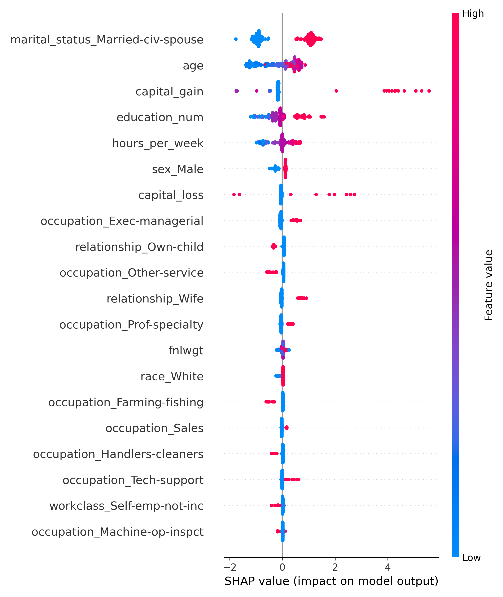

Income Classification from U.S. Census Data
This project predicts whether an individual earns >50K per year based on U.S. Census demographic and employment features (age, workclass, education, marital status, occupation, hours worked, etc.). The prediction target is binary (<=50K vs >50K). We will build baseline and progressively more complex machine learning models and evaluate them for accuracy, fairness, and interpretability.
More details
Problem
Income inequality remains a central topic in social and economic research. Predicting income brackets from census data highlights structural relationships between education, occupation, and demographic variables. Prior studies on the UCI Adult dataset show that while linear models achieve moderate accuracy, ensemble methods often perform better by capturing nonlinear dependencies. This project combines statistical rigor with interpretability to showcase responsible machine learning. This problem is important because income level is strongly tied to access to healthcare, housing stability, educational opportunities, and long-term economic mobility. Understanding which socioeconomic factors predict higher income can support policymakers, nonprofits, and labor economists in identifying structural inequalities and potential intervention points. Organizations concerned with economic justice and social mobility care deeply about improving predictive tools that reveal disparities in opportunity.
Approach
Collected location data across 47 candidate nap sites over a full academic semester. Features included average daily sunlight (hours), grass softness score (1–10, assessed manually), nearby food-cart proximity, and pedestrian traffic by hour. Trained a gradient boosting classifier to predict a site's "nap quality" rating and used SHAP values to explain which features mattered most.
Results & Impact
Overall, the desired performance goals were met, with Gradient Boosting surpassing the baseline by a significant margin and offering interpretable insights into which socioeconomic variables most influence income level. Some challenges arose during preprocessing and training, particularly with high-cardinality categorical variables and slow convergence in logistic regression. Future work could include hyperparameter tuning for all models, exploring XGBoost for faster training, applying techniques to address class imbalance (such as SMOTE or class-weighting), and conducting a deeper fairness analysis to examine whether model performance differs across demographic groups.